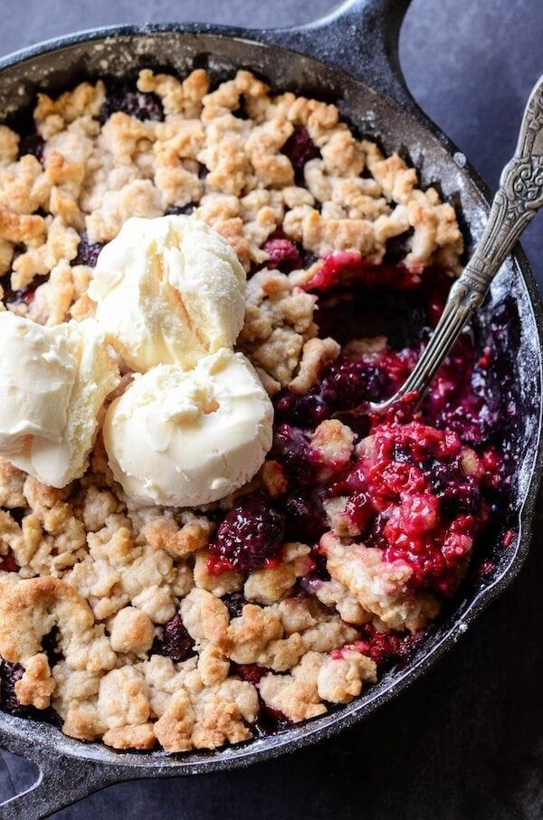
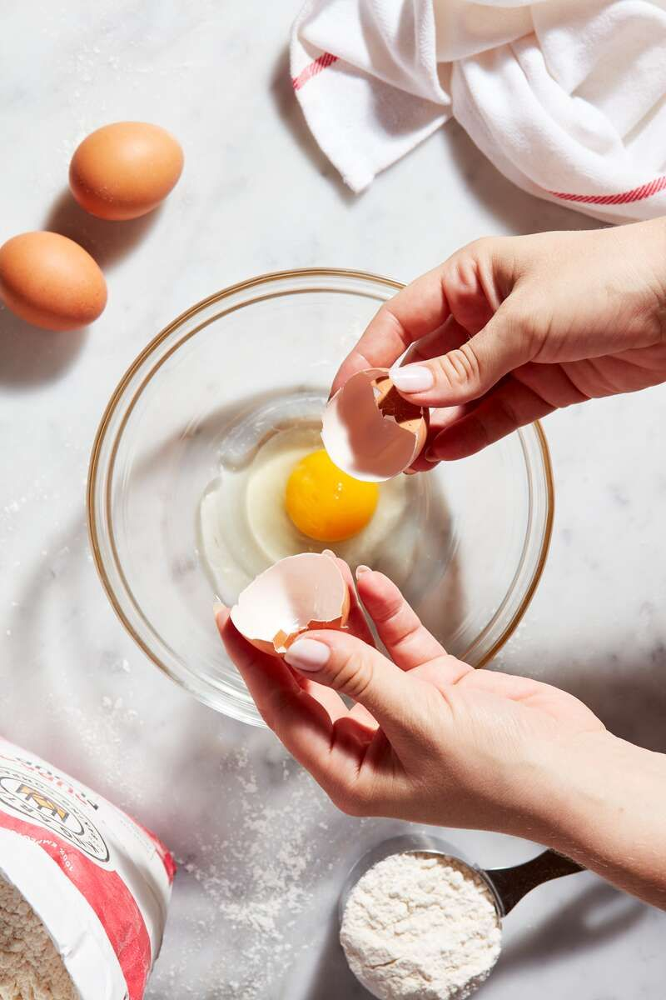
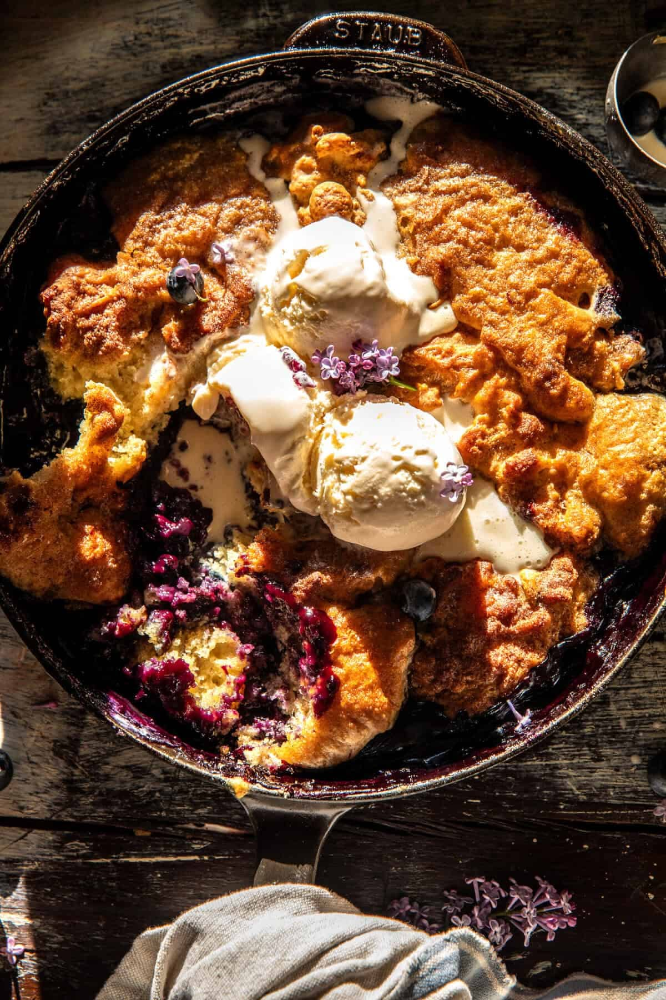

Final research and content collection
Research evaluation (Google Doc)
This berry cobbler is a simple but delicious warm dessert made with a mixture of fresh berries and a sweet, buttery crumble topping. This classic low effort desert served with a scoop of your favorite vanilla icecream, is sure to impress.
| Serves | 6 (per source) |
|---|---|
| Total time | About 1 hour: short prep, then 45–50 minutes baking |
| Oven | 375°F |
| Serve | Warm or cold, with vanilla ice cream if you like |
| Contains | Wheat (gluten), egg, dairy |
| Ingredient | Serves 6 (as written) | Serves 8 (scaled) |
|---|---|---|
| Mixed berries | 4 cups | 5⅓ cups |
| Lemon juice | 1 tablespoon | 1 tablespoon + 1 teaspoon |
| All-purpose flour | 1 cup | 1⅓ cups |
| Granulated sugar | 1 cup | 1⅓ cups |
| Large egg | 1 | 1 (see open question below) |
| Butter | 6 tablespoons | 8 tablespoons (1 stick) |
Oven, 9 × 9-inch baking dish (a slightly larger dish may be needed for 8 servings), small mixing bowl, measuring cups and spoons, knife and cutting board.
Recipe from Self Proclaimed Foodie by Krissy Allori.
I want warm, colorful high quality photographs that emphasize the berries, the texture of the topping, and the contrast between dark fruit and the light brown crust. I want the design to feel clean but homey. I may choose to take my own images as well, I plan to make the recipe soon. I also still have to optimize the image files.


